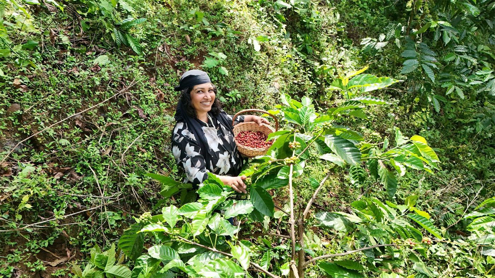
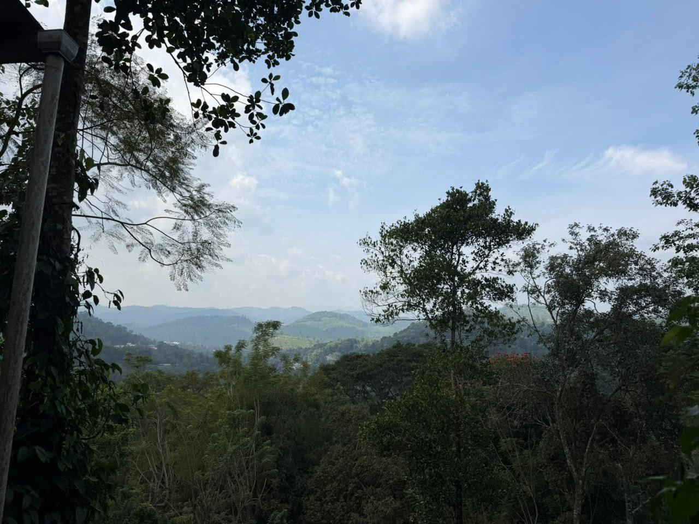
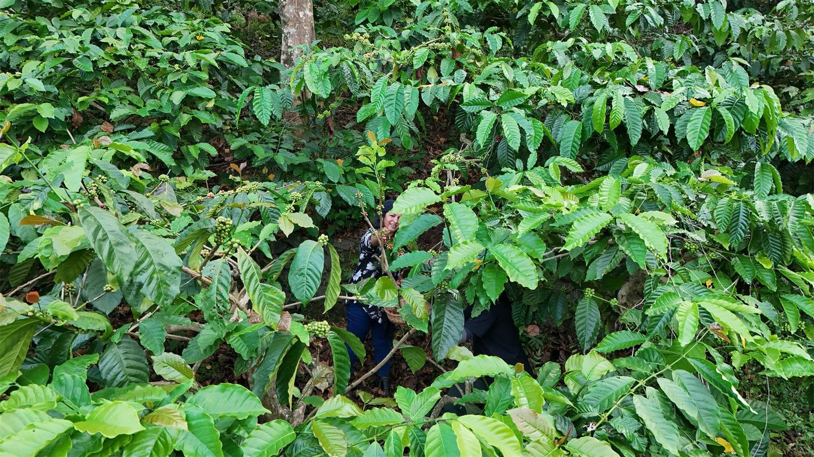
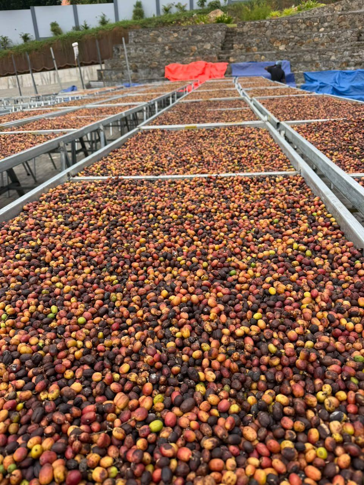
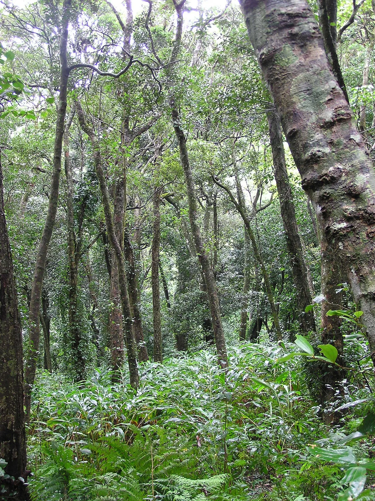
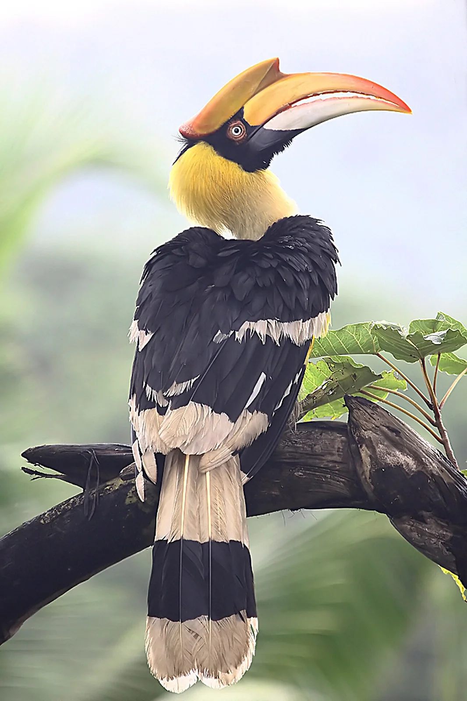

Our coffee
From cherry to cup
Discover the journey of coffee, from selective harvesting of ripe cherries to careful processing and drying.
Explore Our Coffee
Discover the rich landscapes, specialty coffee, aromatic spices and vibrant biodiversity of Nechekattu Farm.


Nestled in Vandiperiyar, within the lush Cardamom Hills of Kerala’s Western Ghats, Nechekattu Farm is a landscape shaped by coffee, spices, nature and generations of farming knowledge.
Here, coffee grows beneath a canopy of shade trees, pepper vines climb through the landscape, and cardamom thrives in the cool, humid surroundings of the hills.
Our farm is more than a place of cultivation. It is an ecosystem where agriculture, biodiversity and community come together.
Follow your curiosity through the plantation, from the first coffee cherry to the life beneath the canopy.

Discover the journey of coffee, from selective harvesting of ripe cherries to careful processing and drying.
Explore Our Coffee
Discover pepper, cardamom and the flavours of Kerala within a living spice-growing landscape.
Discover Our Spices
Look closer at the birdlife, native vegetation and natural landscapes of the Western Ghats.
Explore Our Biodiversity
Walk through the plantations, meet our farm team and discover how coffee and spices grow.
Explore Farm ExperiencesFollow the coffee journey. Six moments, connected by care.

The journey begins with delicate white coffee blossoms. Flowering gives way to fruit, shaped by the growing season and the care of the farm team.
The plantation landscape, grassland areas, trees and natural habitats create space for wildlife and birdlife.
Meet Our Wild NeighboursA regional birdlife collection, based on the species list supplied for the farm and surrounding landscape. Farm-specific records require confirmation; images are illustrative and sightings are never guaranteed.

Experience the coffee trees, spice gardens, landscapes and stories of Nechekattu Farm.